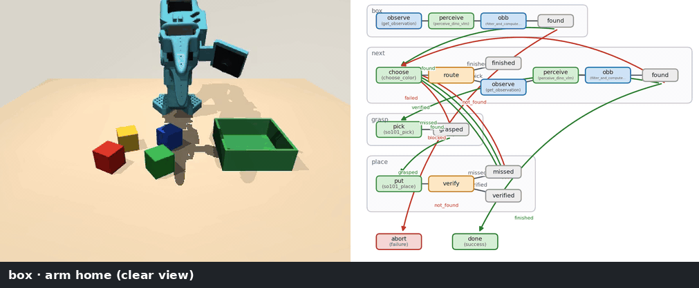
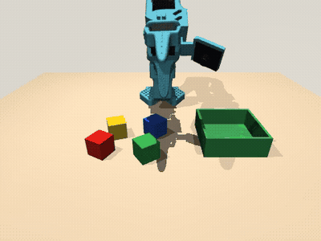
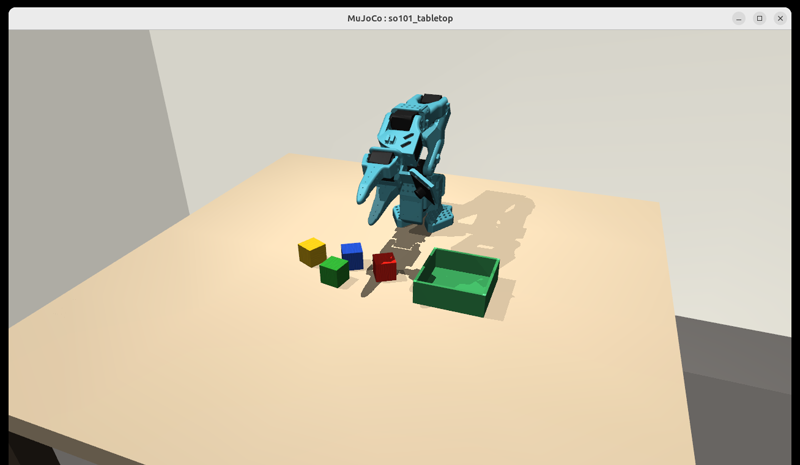

An SO-101 arm sorts coloured cubes into a box. The policy isn't a black-box network: it's a typed graph of skills (perception, VLM reasoning, inverse kinematics, verification), and it runs entirely on a single Orin. You can write the graph by hand, or describe the task in a sentence and let a local LLM generate it.
docker composeDemo
Left: the SO-101's front camera. Right: the Graph-as-Policy workflow, with the node that is running outlined in orange. Each caption is built from that node's recorded output in the trace.

Seed 2, order red → green → blue → yellow, sped up: all four cubes sorted into their own quadrants and each confirmed by the VLM. 262 s on the Jetson AGX Orin.


--gui).How it works
One compose file starts the language model and the graph viewer. Each episode runs the simulator, the graph executor and the vision models side by side on the same device.
vlm, viz, so101LeRobot's EnvHub MuJoCo scene: the SO-101, four 3 cm cubes and a green box. Front RGB-D, rendered with EGL.
Runs the typed workflow, routes on each step's exit, and records every node's inputs and outputs in a trace.
A GaP RobotIO driver and a damped-least-squares IK solver for the 5-DOF SO-101, both added by this package.
Grounding DINO proposes boxes, a VLM tournament picks the right one, and SAM3 plus depth give a 3D oriented box.
30B-A3B Q4_K_M on llama.cpp. It acts as the in-graph VLM, and writes graphs from sentences with thinking mode on.
Shows each run's graph, node data and VLM prompts. Open it over an SSH tunnel at localhost:9432.
Memory: the VLM takes about 32 GB and an episode about 15 GB (simulator, SAM3, DINO), so both fit together in the Orin's 64 GB of unified memory.
:8080 VLM · :9432 viewerFour subgraphs, each owned by an SO-101 skill. Every step exits with a label, and the top level routes on those labels. In the sorting demo, every outcome loops back to the next colour.
Send the arm home for a clear view, then locate the green box in 3D.
Pick the next colour in the order that hasn't been verified yet, then find that cube.
Top-down grasp, jaws tangential, 45% opening. The gripper reading confirms the hold.
Place in the colour's quadrant, go home, then the VLM checks the cube is inside the box.
The loop never uses the simulator's ground truth. It ends when every colour is VLM-verified, after 3 tries per colour, or after 16 passes. Ground truth is only used in the final report.
Sentence → graph
Graph-as-Policy's multi-agent codegen runs against Nemotron on the Jetson. The model only sees the five SO-101 skills, written as GaP skill bundles with contracts, canonical scripts and builder examples. A deterministic repair pass then fixes the small wiring slips a 30B model makes.
$ .venv/bin/so101-gap-generate "pick the red cube and put it in the green box" ... coordinator → subgraph agents → validate (about 5–15 min) repair R0: added the missing top-level node for subgraph 'locate_red_cube' repair R4: 'pick_red_cube' conditional edges now route on router_field 'exit' [so101-gap-generate] OK: graph/generated/pick_the_red_cube_.../task_00 START → locate_container → locate_red_cube → pick_red_cube → place_red_cube → done $ GRAPH=graph/generated/pick_the_red_cube_and_put_it_in_the_green_box/task_00 \ docker compose run --rm so101 [pick] holding (gripper 0.152) [verify] red cube in box? True ('YES The red cube is inside the green box.') [so101-gap] SUCCESS: 1/1 cubes in the box
router_field: "exit", which the runtime requires.After repairing, the generator revalidates with GaP's own validator. tests/test_repair.py replays a real Nemotron output through these rules.
| Skill | What it does | Exits |
|---|---|---|
so101-locating-container | Finds the green box (always the first step) | found · not_found |
so101-locating-cube | Finds one named cube | found · not_found |
so101-next-cube | Loop head for several cubes in an order | found · finished · not_found |
so101-picking-cube | Top-down pick with the 5-DOF SO-101 | grasped · failed |
so101-placing-in-container | Places in the colour's quadrant, then a VLM check | verified · missed · blocked |
Results
"Cubes in box" is the simulator's ground truth, checked after the run. During the run the graph itself only uses camera images and the gripper reading.
| Graph | Task | Result | Time |
|---|---|---|---|
| hand-written | seed 2, red → green → blue → yellow | 4/4 | 262 s |
| hand-written | seed 0, red → green → blue → yellow | 4/4 | 406 s |
| hand-written | seed 3, yellow → blue → green → red | 4/4 | 366 s |
| hand-written | seed 1 | 3/4 | 452 s |
| hand-written | seed 4, blue → red → yellow → green | 2/4 | 494 s |
| generated | "pick the blue cube and put it in the green box" | 1/1 | 77 s |
| generated | "pick the red cube and put it in the green box" | 1/1 | 74 s |
| generated | "sort the cubes … yellow, red, blue" | 2/3 | 195 s |
Known weak spot: the single front-view VLM check ("is the X cube in the box?") can misjudge a green cube against the green box, or a half-hidden cube, in either direction. In the generated 3-cube run, the model wrote the cubes out in sequence instead of using the retrying loop skill, so one missed grasp ended the run.
Quick start
Tested on a Jetson AGX Orin 64 GB (L4T R39, CUDA 13, driver 595) with Docker and the NVIDIA runtime. SAM3's weights are gated, so you need a Hugging Face token with access.
$ mkdir -p ~/workspace/so101-demo && cd ~/workspace/so101-demo $ git clone https://github.com/kabilankb/so101-gap.git && cd so101-gap $ huggingface-cli login # SAM3 is gated $ ./jetson/install.sh
$ docker compose up -d vlm viz # Nemotron :8080 + viewer :9432 $ docker compose run --rm so101 # one episode, live GUI $ SEED=3 ORDER=yellow,blue,green,red docker compose run --rm so101 $ GRAPH=graph/pick_one docker compose run --rm so101
To see the graph from your laptop, run ssh -N -L 9432:127.0.0.1:9432 atlas@<jetson-ip> and open http://localhost:9432. To build your own graph, start from graph/build_pick_one.py. The README has the full guide.